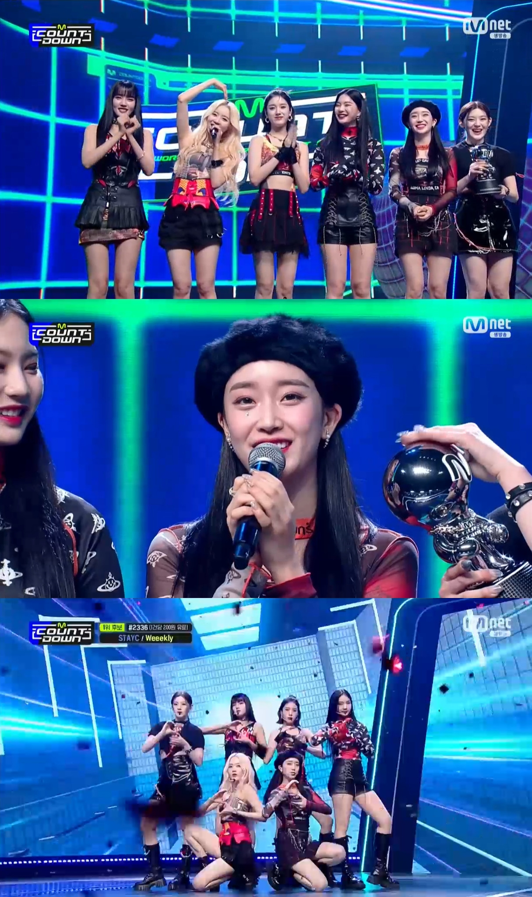

그룹 스테이씨(STAYC)가 ‘1위 가수’다운 무대 매너를 선보였다.
스테이씨(수민, 시은, 아이사, 세은, 윤, 재이)는 17일 방송된 Mnet 음악 프로그램
‘엠카운트다운’에서 두 번째 미니앨범 ‘YOUNG-LUV.COM’ 타이틀곡 ‘RUN2U (런투유)’로 또 한번 1위를 차지했다.
이날 1위로 호명된 뒤 수민은 “2주 연속
1위를 주셔서 감사하다. 팬 분들께 감사하고, 소속사 스태프 분들, 멤버들의 부모님들에게도 감사하다. 이번 활동 끝나가는데 함께해주셔서 감사하다. 앞으로도 ‘RUN2U’ 많이
사랑해달라”라고 인사했다. 윤과 시은도 “사랑해요”라는 인사를 전했다.
앞서 펼쳐진 무대에서 스테이씨는 ‘전원 센터’, ‘전원 탑티어’ 수식어를 납득시키는 매력적인 비주얼로
무대에 올랐다. 스테이씨의 사랑스러운 에너지가 보는 이들의 마음까지 사로잡았다.
스테이씨는 강한 중독성을 지닌 포인트 안무 ‘주춤주춤’부터 총을 장전하는 동작, 가슴을
두드리는 동작 등의 퍼포먼스 등 다채로운 무대를 구성했고, 탄탄한 실력과 표정 연기로 이를 더욱 특별하게 완성했다.
‘RUN2U’는 남들이 뭐래도 사랑을 위해서라면 두려움
없이 너를 향해 달려가겠다는 마음을 스테이씨만의 느낌으로 솔직하게 표현한 곡이다. 이날로 음악방송 7관왕을 기록했고, 멜론의 실시간·일간·주간 차트에서 모두 TOP 10을 달성하며
상승세를 이어가고 있다.
스테이씨는 앞으로도 다양한 활동 및 콘텐츠를 통해 활발히 활동을 이어갈 예정이다.
NEWS
‘엠카’ 스테이씨, ‘RUN2U’ 음악 방송 7관왕 달성! “2주 연속 1위 감사”
